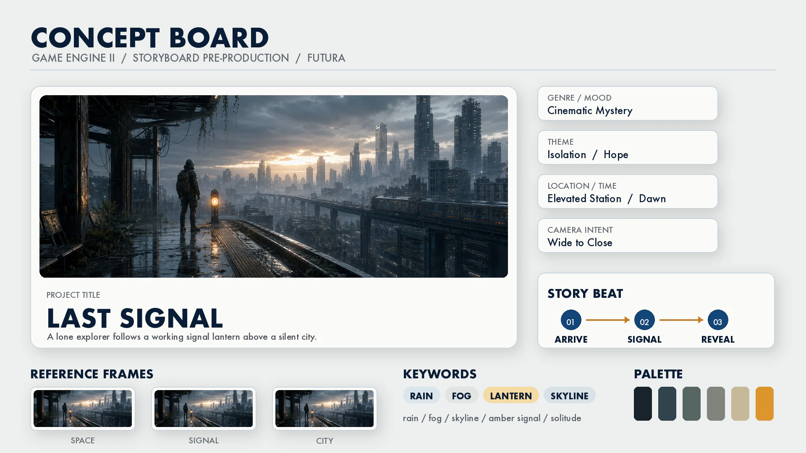
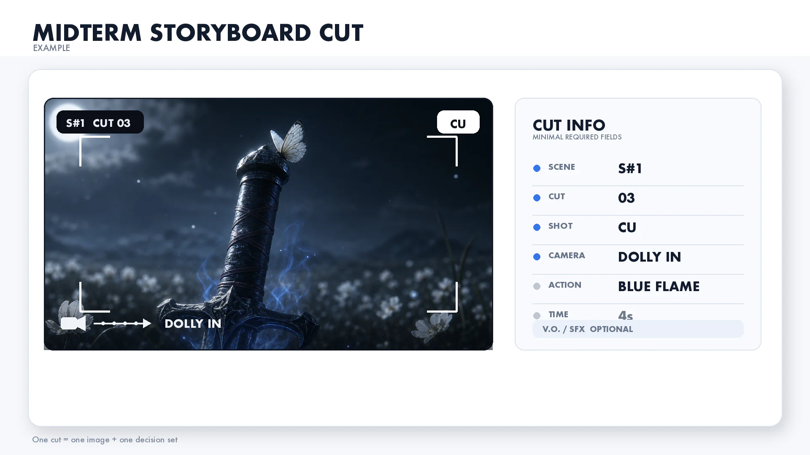

Game Engine II — 중간고사 가이드라인
---
중간고사 개요
| 항목 | 내용 |
|---|---|
| 과제 | 시네마틱 스토리보드 제작 |
| 비중 | 전체 성적의 20% |
| 작업 방식 | 개인 작업 (팀 불가) |
| 제출물 | 스토리보드 + 컨셉 문서 (하나의 파일로 합쳐서 제출) |
---
제출 안내
마감 및 제출 방법
| 항목 | 내용 |
|---|---|
| 마감일시 | 2026년 4월 29일 (수) 오후 11:59까지 |
| 제출 경로 | LMS → 게임엔진 II → 과제 → 중간고사: 시네마틱 스토리보드 |
| 파일 형식 | PDF (권장) 또는 PPT/PPTX |
| 파일 이름 | 중간고사_학번_이름.pdf (예: 중간고사_20210001_홍길동.pdf) |
| 파일 크기 | 50MB 이하 |
| 제출 횟수 | 마감 전까지 재제출 가능 (마지막 파일만 채점) |
지각 제출 정책
| 구간 | 감점 |
|---|---|
| 마감 후 ~ 24시간 이내 | -10% |
| 24시간 초과 ~ 3일 이내 | -30% |
| 3일 초과 | 제출 불가 (0점) |
제출 파일 구성
하나의 PDF(또는 PPT) 안에 아래 순서로 구성합니다.
| 순서 | 페이지 | 내용 |
|---|---|---|
| 1. | 1페이지 | 표지 — 과목명, 학번, 이름, 제출일 |
| 2. | 2페이지 | 컨셉 문서 (아래 상세 참고) |
| 3. | 3페이지~ | 스토리보드 6컷 이상 (아래 상세 참고) |
---
제출물 상세
1. 컨셉 문서 (1페이지)
6주차에 배운 컨셉 개발 프로세스를 바탕으로 작성합니다.
| 항목 | 내용 | 포함 여부 |
|---|---|---|
| 제목 | 시네마틱 작품 제목 (자유) | 포함 |
| 테마 | 어떤 이야기/분위기를 만들 것인가 (한 줄) | 포함 |
| 장소·시간 | 어디서, 언제 (예: 사막 협곡, 석양) | 포함 |
| 분위기 키워드 | 3~5개 (예: 경이로움, 고독, 장엄) | 포함 |
| 시놉시스 | 영상의 흐름을 2~3문장으로 요약 | 포함 |
| 레퍼런스 이미지 | 2~3장 (영화, ArtStation, 사진 등) + 출처 표기 | 포함 |
| 컬러 팔레트 | 주요 색상 3~5개 (색상 견본 이미지 또는 HEX 코드) | 포함 |
| 예상 영상 길이 | 기말에 제작할 영상의 예상 길이 (예: 30초~1분) | 선택 |

2. 스토리보드 (6컷 이상)
기말에 만들 시네마틱 영상의 설계도입니다.
각 컷에 포함해야 할 항목:
| 항목 | 예시 | 포함 여부 |
|---|---|---|
| 그림/이미지 | UE5 스크린샷, 손그림, AI 생성 이미지 등 | 포함 |
| 씬/컷 번호 | S#1 - Cut 1 | 포함 |
| 샷 사이즈 | ES, EWS, LS, FS, MLS, Cowboy, MS, MCU, CU, ECU | 포함 |
| 카메라 무빙 | Pan, Tilt, Dolly, Track, Crane, Zoom, Static | 포함 |
| 상황 설명 | "석양 아래 협곡 전경이 드러난다" (1줄 이상) | 포함 |
| 대사/사운드 | 나레이션, BGM, 효과음 등 | 선택 |
| 예상 시간 | 예: 3~5초 | 선택 |
스토리보드 제작 방법 (택 1, 혼합 가능):
| 방법 | 설명 |
|---|---|
| UE5 스크린샷 활용 (권장) | 자기 레벨에서 카메라 앵글 잡고 High Resolution Screenshot 캡처 → 템플릿에 배치 |
| 손그림 | 종이에 그린 후 스캔/촬영 → 템플릿에 배치. 해상도 300dpi 이상 권장 |
| AI 활용 | ComfyUI Nano Banana 등으로 스타일 변환 → 템플릿에 배치 |
- 컷 순서는 시간 흐름 순으로 배치하세요
- 6컷은 최소 기준입니다. 기말 영상의 전체 흐름을 담으려면 8~12컷을 권장합니다
- 인터넷에서 가져온 이미지를 그대로 사용하지 말고, 본인이 제작(캡처/그리기/AI 생성)한 이미지를 사용하세요
- AI 생성 이미지를 사용한 경우, 해당 컷 아래에 사용 도구와 프롬프트를 간략히 표기하세요 (예: "Nano Banana 2 — storyboard sketch style")
- 카메라 무빙 화살표를 이미지 위에 직접 그려 넣으면 의도가 더 명확해집니다
1컷 작성 예시:

- LMS → 수업 자료에서 다운로드 (PPT / 구글슬라이드 두 가지 제공)
- 템플릿 사용은 권장 사항입니다. 자신만의 형식도 가능합니다
---
채점 기준
| 기준 | 비중 | A (우수) | B (양호) | C (보통) |
|---|---|---|---|---|
| 스토리텔링 | 30% | 장면 간 흐름이 자연스럽고 감정 변화가 느껴짐 | 흐름은 있으나 감정 전달이 약함 | 컷 간 연결이 불분명 |
| 샷 구성 | 25% | 다양한 샷 사이즈를 의도에 맞게 활용, 구도 우수 | 샷 다양성은 있으나 의도가 불명확 | 샷 사이즈가 단조로움 |
| 카메라 워크 | 25% | 카메라 무빙이 연출 의도와 일치, 표기가 정확 | 무빙 표기는 있으나 연출 의도와 불일치 | 무빙 표기 누락 많음 |
| 완성도 | 20% | 컨셉 문서 충실, 표기법 일관, 6컷 이상 | 일부 항목 누락 | 컨셉 문서 미포함 또는 3컷 이하 |
중요한 것은 기획 의도가 명확하게 전달되느냐입니다. UE5 스크린샷이든 손그림이든, 어떤 장면을 어떤 카메라로 찍겠다는 의도가 보이면 됩니다.
---
제출 전 체크리스트
| 번호 | 체크 | 항목 |
|---|---|---|
| 1 | 미확인 | 스토리보드 6컷 이상 |
| 2 | 미확인 | 각 컷에 샷 사이즈 약어 표기 (ES, MS, CU 등) |
| 3 | 미확인 | 각 컷에 카메라 무빙 표기 (화살표 또는 텍스트) |
| 4 | 미확인 | 각 컷에 상황 설명 1줄 이상 |
| 5 | 미확인 | 컨셉 문서 1장 포함 (테마, 분위기, 레퍼런스, 컬러 팔레트) |
| 6 | 미확인 | PDF 또는 PPT 형식으로 LMS 업로드 |
| 7 | 미확인 | 2026년 4월 29일 (수) 오후 11:59까지 제출 |
---
참고: 샷 사이즈 약어 정리
| 약어 | 이름 | 프레임 |
|---|---|---|
| ES | Establishing Shot | 장소 전체 |
| EWS | Extreme Wide Shot | 환경 속 극히 작은 인물 |
| LS/WS | Long Shot / Wide Shot | 인물 전체 + 배경 |
| FS | Full Shot | 머리~발끝 |
| MLS | Medium Long Shot | 무릎 위 |
| Cowboy | Cowboy Shot | 허벅지 중간 |
| MS | Medium Shot | 허리/가슴 위 |
| MCU | Medium Close-Up | 어깨 위 |
| CU | Close-Up | 얼굴 전체 |
| ECU | Extreme Close-Up | 눈, 입 등 일부 |
참고: 카메라 무빙 정리
| 카메라 무빙 | 설명 | 스토리보드 표기 |
|---|---|---|
| Pan | 카메라 제자리, 좌우 회전 | 좌우 화살표 (프레임 하단) |
| Tilt | 카메라 제자리, 상하 회전 | 상하 화살표 (프레임 측면) |
| Dolly | 카메라 앞뒤 이동 | 전진/후진 화살표 (카메라 아이콘에서 피사체 방향) |
| Track | 카메라 좌우 이동 | 좌우 화살표 (카메라 아이콘 아래) |
| Crane | 카메라 상하 이동 | 상하 화살표 (카메라 아이콘 옆) |
| Zoom | 렌즈 조절 (카메라 고정) | 프레임 안에 확대/축소 표시 |
| Static | 카메라 고정 | 표기 없음 |
---
자주 묻는 질문 (FAQ)
확장자만 바꾸면 됩니다. 중간고사_학번_이름.pptx (예: 중간고사_20210001_홍길동.pptx)
이미지 해상도를 줄여보세요. PPT의 경우 파일 → 다른 이름으로 저장 → PDF로 변환하면 대부분 용량이 줄어듭니다. 그래도 초과하면 이미지를 JPEG로 변환(품질 80%)하거나, 무료 PDF 압축 도구를 사용하세요.
PPT에서 파일 → 내보내기 → PDF로 만들기를 선택하면 됩니다. Mac의 경우 파일 → 프린트 → 왼쪽 하단 PDF 버튼으로도 가능합니다. 구글 슬라이드는 파일 → 다운로드 → PDF 문서를 선택하세요.
과제 기준입니다. 중간고사 점수에서 10%를 감점합니다. (예: 80점 → 72점)
상한은 없지만 12컷 이내를 권장합니다. 컷 수가 많다고 높은 점수를 받는 것은 아닙니다. 각 컷의 의도와 흐름이 명확한 것이 중요합니다.
네, 기말 프로젝트에서 스토리보드를 수정·발전시켜도 됩니다. 중간고사 스토리보드는 기말 영상의 출발점이지, 그대로 따라야 하는 확정본이 아닙니다.